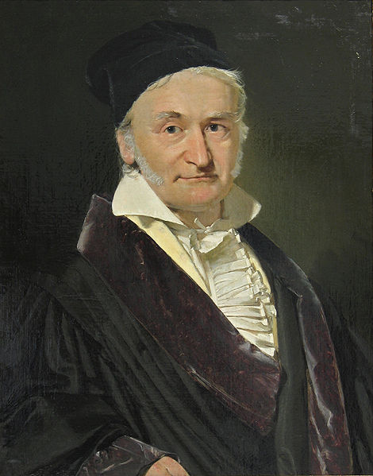

Carl Friedrich Gauss
The Foremost Of Mathematicians

Carl Friedrich Gauss,painted by Christian Albrecht Jensen
- Johann Carl Friedrich Gauss was born on 30 April 1777 in Brunswick (Braunschweig), in the Duchy of Brunswick-Wolfenbüttel (now part of Lower Saxony, Germany), to poor, working-class parents
- Gauss was a child prodigy. In his memorial on Gauss, Wolfgang Sartorius von Waltershausen says that when Gauss was barely three years old he corrected a math error his father made; and that when he was seven, he confidently solved an arithmetic series problem faster than anyone else in his class of 100 students.
- Gauss's intellectual abilities attracted the attention of the Duke of Brunswick, who sent him to the Collegium Carolinum (now Braunschweig University of Technology), which he attended from 1792 to 1795, and to the University of Göttingen from 1795 to 1798
- He completed his magnum opus, Disquisitiones Arithmeticae, in 1798, at the age of 21,though it was not published until 1801. This work was fundamental in consolidating number theory as a discipline and has shaped the field to the present day
- On 9 October 1805, Gauss married Johanna Osthoff (1780–1809), and had a son and a daughter with her. Johanna died on 11 October 1809, and her most recent child, Louis, died the following year. He then married Minna Waldeck (1788–1831) on 4 August 1810, and had three more children. Gauss was never quite the same without his first wife, so he, just like his father, grew to dominate his children. Minna Waldeck died on 12 September 1831
- Gauss remained mentally active into his old age, even while suffering from gout and general unhappiness. For example, at the age of 62, he taught himself Russian.
- In 1845, he became an associated member of the Royal Institute of the Netherlands; when that became the Royal Netherlands Academy of Arts and Sciences in 1851, he joined as a foreign member.
- On 23 February 1855, Gauss died of a heart attack in Göttingen (then Kingdom of Hanover and now Lower Saxony);
The contributions made by Gauss are innumerable. Some of his areas of study were:
- Algebra
- Astronomy
- Magnetism
- Non-Euclidean geometries
- Statistics
- I have had my results for a long time: but I do not yet know how I am to arrive at them.
- The enchanting charms of this sublime science reveal themselves in all their beauty only to those who have the courage to go deeply into it.
- It is not knowledge, but the act of learning, not possession but the act of getting there, which grants the greatest enjoyment.
If you want to know more about the life of this extraordinary genius and his contributions visit Wikipedia